LLM、Agents 与 Scaling Law：从语言模型到最小操作系统
课程：2026 春季学期《操作系统原理》，Hacking Day 选讲
讲师：蒋炎岩（jyy）
官方课程主页：https://jyywiki.cn/OS/2026/
官方讲义：https://jyywiki.cn/OS/2026/lect4.md
视频来源：Bilibili BV1gEcmzzE4P
版权说明：课程讲义与幻灯片归蒋炎岩所有，采用 Creative Commons BY-NC 4.0 许可；本电子书是对课堂讲授的书面化重构，保留出处与许可说明。
导读：Hacking Day
(参考时间: 00:00:00)
课程调整为 3 学分后，每四次课安排一次 Hacking Day，讲授与操作系统和应用生态相关的扩展知识，不作为考试内容。
本讲讨论三个相互关联的问题：
- 大语言模型为什么能够理解世界并生成代码？
- Agent 为什么能像人一样长期工作？
- 为什么“增加算力、数据和模型规模”能够带来智能的质变？
课堂最后不依赖预演，直接让 Coding Agent 生成一个 RISC-V 最小操作系统内核，并观察它如何规划、写代码、编译、报错和修复。
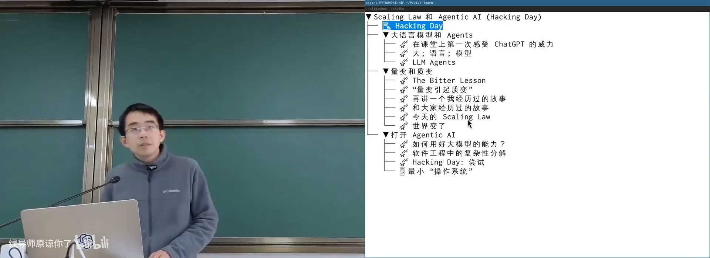
📷 第一次 Hacking Day 与现场演示目标
回到原视频 (00:00:00)
1. 第一次感受到 ChatGPT 的威力
(参考时间: 00:02:10)
ChatGPT 发布仅两个多月时，课堂曾询问它一个编译器优化问题：一段包含内联汇编的 C 代码，经过编译后会得到怎样的结果？
当时的 GPT-3.5 给出了相当准确的回答。那一刻让人感觉世界发生了根本变化：
- 模型不仅会背知识，还表现出程序语言和编译行为的“直觉”；
- 自然语言成为可以直接调用复杂专业知识的接口；
- 编程不再只属于熟练程序员。
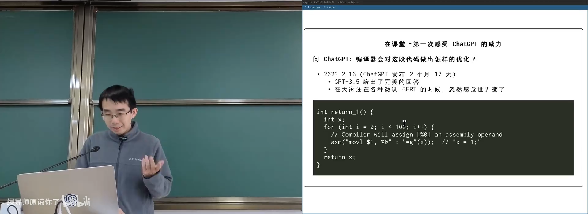
📷 早期 ChatGPT 分析编译器优化
回到原视频 (00:02:10)
2. 什么是大语言模型
2.1 大：应对宏观复杂性的必要条件
(参考时间: 00:03:55)
薛定谔在《生命是什么》中提出过一个看似朴素的问题：为什么原子这么小，而生命体这么大？
一个原子能携带的信息非常有限。极少数原子组成的系统，很难承载生命和智能表现出的复杂性。因此，“大”是应对宏观复杂世界的必要条件。
flowchart LR
A["小系统<br/>信息容量有限"] --> B["无法承载高度复杂行为"]
C["大系统<br/>大量基本单元"] --> D["可以形成复杂结构"]
D --> E["语言、生命与智能"]
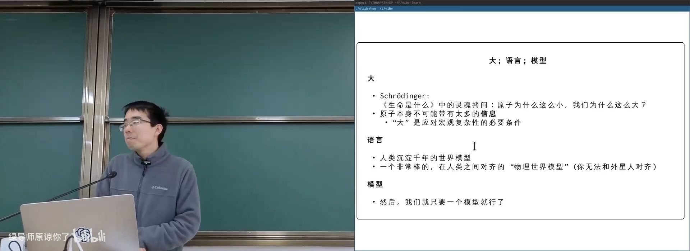
📷 “大”是承载复杂性的必要条件
回到原视频 (00:03:55)
2.2 语言：人类沉淀的世界模型
(参考时间: 00:05:49)
为什么大语言模型选择“语言”作为核心，而不是图像或棋局？
讲师认为，语言是人类几千年以来共同积累、相互对齐的世界模型。例如：
“我在来上课的路上看到一个美女。”
这句话非常短，但背后隐含了：
- 什么是“来上课”；
- 什么是“路上”；
- 什么是“看到”；
- 什么是“美女”；
- 每个人如何在各自经验中解构这个概念。
不同人想到的形象不同，但概念结构大致相似，因为人类共享物理世界、教育体系和文化经验。这种共享 Grounding 使语言能够成为跨个体对齐的抽象。
flowchart TD
W["共享物理世界"] --> E["共同经验"]
E --> L["语言与世界模型"]
L --> A["人与人之间对齐"]
L --> M["大语言模型学习"]
这也解释了模型有时为什么理解得很好，有时又会误解：语言压缩了信息，也丢失了部分个体经验。
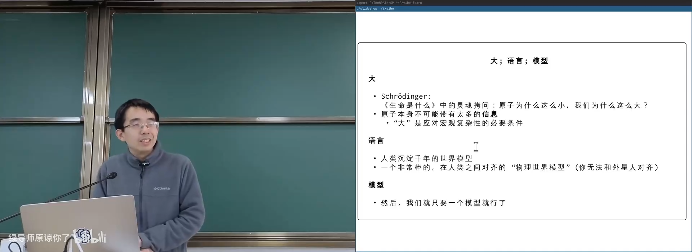
📷 语言作为人类共享的世界模型
回到原视频 (00:05:49)
2.3 模型：Next Token Prediction
(参考时间: 00:09:40)
语言模型的核心机制是根据已有上下文，预测下一个 token 的概率分布。
训练通常分为两个阶段：
flowchart LR
T["大规模文本"] --> P["预训练<br/>学习世界与语言结构"]
P --> F["后训练<br/>指令遵循与对话"]
F --> C["上下文 / Context"]
C --> N["预测 next token"]
N --> C
- 预训练：从海量文本学习语言、知识和统计规律；
- 后训练：把模型调整为愿意遵循指令、进行对话的助手；
- 推理：根据完整上下文不断预测下一个 token。
图片、语音和视频等多模态信息最终也可以映射到同一视觉或语言空间，因此模型可以统一处理不同感官输入。
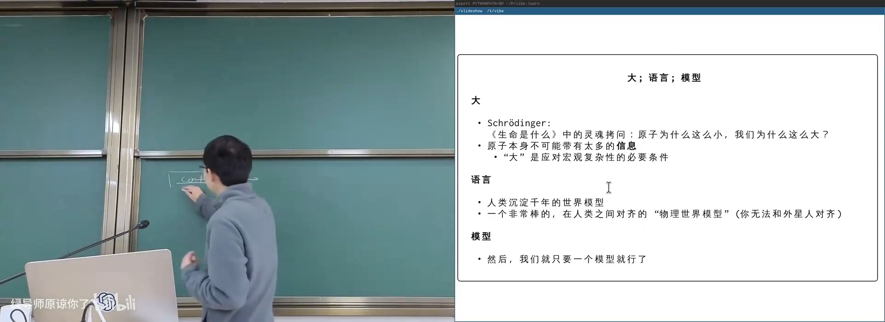
📷 基于上下文预测下一个 token
回到原视频 (00:09:40)
2.4 为什么概率模型能够写程序
(参考时间: 00:11:07)
2022 年，Google 发布 AlphaCode，展示了神经模型在编程竞赛中的潜力。课堂回忆起当时最令人震惊的问题：
一个只会预测下一个 token 的模型，为什么能顺序写出上百行正确程序？
结构与人类编写代码的方式不同。人类程序员通常会：
- 理解问题；
- 设计算法；
- 写伪代码；
- 把伪代码逐步翻译成代码。
如果把伪代码视为草稿纸，那么最后“写代码”可以近似看成一种机器翻译任务。
flowchart LR
P["问题描述"] --> R["推理与伪代码"]
R --> C["代码生成"]
C --> T["编译与测试"]
T -->|"失败"| R
T -->|"成功"| O["可运行程序"]
大模型在上下文中保留足够多中间结果后，可以把复杂思考转成接近线性的生成过程。这也是将模型能力继续扩展的关键。
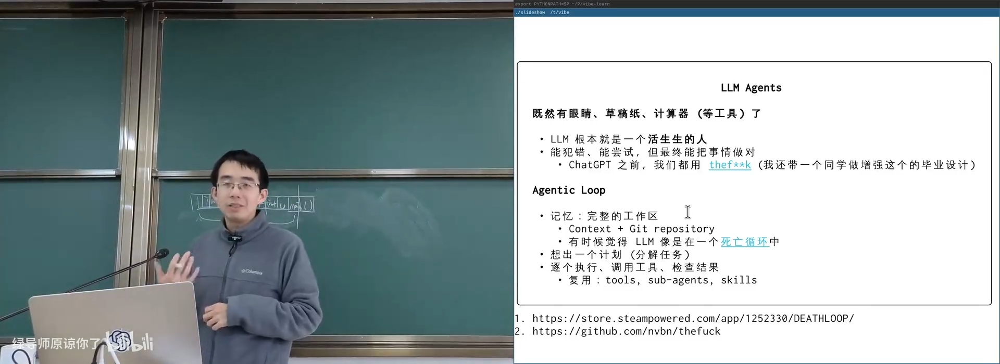
📷 从伪代码到代码的翻译式生成
回到原视频 (00:12:59)
3. 从语言模型到具有感官和工具的 Agent
3.1 “眼睛”：ViT 与多模态
图像可以被切分成小块，每块映射成向量，再与文本 token 放在同一空间处理。ViT 等工作使“看图片”变成语言模型可以处理的任务。
flowchart LR
I["图像"] --> P["切分为 patch"]
P --> V["视觉向量"]
V --> T["与文本 token 对齐"]
T --> M["多模态语言模型"]
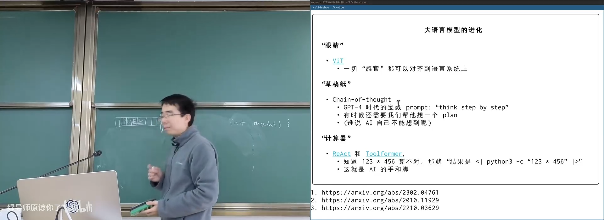
📷 通过视觉 token 为语言模型增加“眼睛”
回到原视频 (00:21:08)
3.2 “草稿纸”：Chain-of-Thought
如果模型只在脑内一次性得到答案，就容易受有限上下文和短期工作记忆限制。把推理步骤写出来，可以显著提升复杂任务表现。
GPT-4 时代常使用：
Think step by step.
例如计算 123 + 456，模型可以把数字拆成百位、十位和个位，再逐步组合。虽然路径更长，但每一步更简单，更容易保持正确。
flowchart LR
Q["123 + 456"] --> A["100 + 20 + 3<br/>+ 400 + 50 + 6"]
A --> B["100 + 400"]
A --> C["20 + 50"]
A --> D["3 + 6"]
B --> R["579"]
C --> R
D --> R
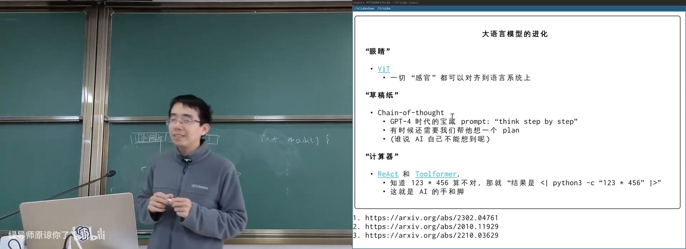
📷 Chain-of-Thought 把隐式推理变成可检查步骤
回到原视频 (00:22:24)
3.3 “计算器”：ReAct 与 Toolformer
模型不必自己完成所有计算。对 123 × 456，人类会自然打开计算器。类似地，模型可以输出调用工具的意图，把结果写回上下文后继续推理。
这就是 Agent 的“手和脚”。
sequenceDiagram
participant M as LLM
participant T as Python / Tool
participant C as Context
M->>T: 调用计算工具 123 × 456
T-->>C: 返回结果
C-->>M: 读取工具结果
M->>M: 继续推理与输出
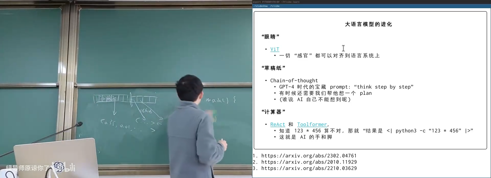
📷 通过工具调用补足模型不擅长的计算与操作
回到原视频 (00:26:42)
3.4 Agentic Loop
(参考时间: 00:29:33)
LLM 有眼睛、草稿纸和工具后，就接近一个能够犯错、尝试、修正并最终完成任务的“人”。
flowchart TD
M["记忆 / 工作区"] --> P["规划任务"]
P --> E["执行一步"]
E --> T["调用工具"]
T --> C["检查结果"]
C -->|"失败"| R["修正计划"]
R --> P
C -->|"成功"| W["写回工作区"]
W --> N["继续下一任务"]
Agent 还需要：
- 记忆：Context、文件系统、Git 仓库；
- 分解：把大任务拆成小任务；
- 执行：调用工具、运行测试；
- 检查：读取错误并验证；
- 复用：Tools、Sub-agents、Skills。
3.5 工作区就是 Agent 的工作记忆
一个项目目录就是理想的 Working Memory：
project/
├── README.md
├── docs/
├── plan.md
├── src/
├── tests/
└── logs/
人类软件工程的长期最佳实践，恰好为 Agent 提供了完整的舞台。
Git 是一组平行宇宙
(参考时间: 00:31:09)
Git 保存目录快照。Agent 可以修改、提交、回退、创建分支、Cherry-pick 和合并。即使当前工作区被改乱，也能回到过去的快照。
flowchart LR
C0["提交 C0"] --> C1["提交 C1"]
C1 --> C2["提交 C2"]
C1 --> B1["实验分支 A"]
C1 --> B2["实验分支 B"]
B1 --> M["选择与合并"]
B2 --> M
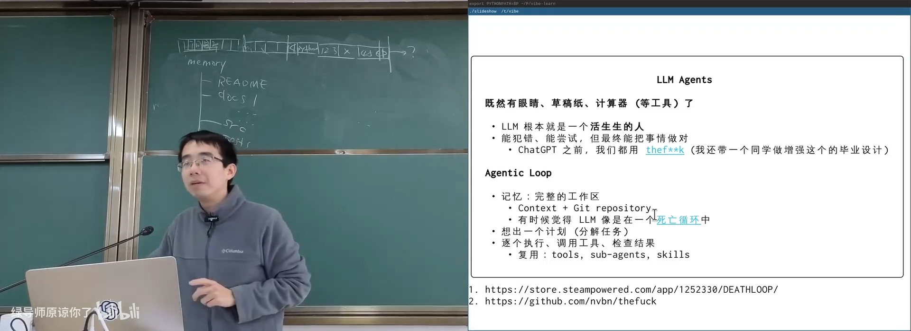
📷 Git 为 Agent 提供可回滚的平行工作空间
回到原视频 (00:31:09)
3.6 大模型像在“死亡循环”中工作
模型推理结束后不会永久保留工作记忆。下一次启动时，它只有训练好的参数和当前上下文。
因此，Agent 必须把计划写进 plan.md，把结果写进代码、测试和日志。这类似游戏 Deathloop：每一次醒来都失去记忆，只能通过外部世界保存进度。
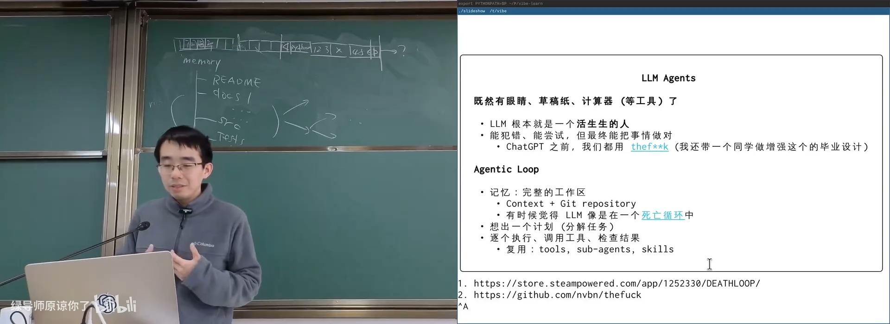
📷 通过计划文件跨会话保存 Agent 记忆
回到原视频 (00:33:33)
3.7 非程序员也可以使用工作区
工作区不是程序员专属。学生可以建立：
study/
├── lectures/
├── exercises/
├── mistakes.md
├── schedule.md
└── exam-papers/
然后让 Agent：
- 根据薄弱知识点生成复习计划；
- 从错题本设计模拟题；
- 搜索往年题；
- 定时发送复习提醒；
- 把任务排入
cron。
讲师早已把个人文档、学习记录和工作资料放入结构化数据库，再通过 Claude Code、Telegram Bot 和定时任务管理。
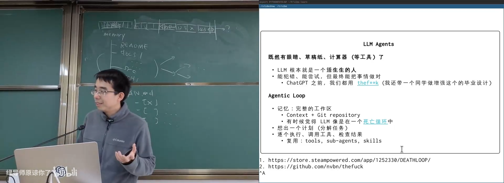
📷 用文件工作区管理学习、生活和自动化任务
回到原视频 (00:35:42)
4. Scaling Law：量变如何引起质变
4.1 The Bitter Lesson
(参考时间: 00:38:25)
Richard Sutton 在《The Bitter Lesson》中指出，人类倾向于把领域知识、对称性和复杂先验写进系统，但长期最有效的方法，往往是能随着算力不断扩展的通用方法。
flowchart LR
H["人类设计启发式规则"] --> L["短期的好效果"]
S["通用方法 + 更多算力/数据"] --> G["长期压倒性优势"]
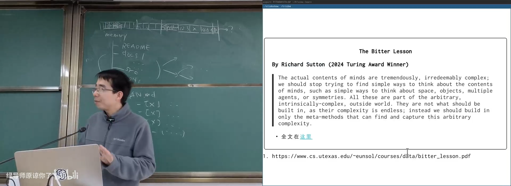
📷 The Bitter Lesson：通用方法随规模增长
回到原视频 (00:38:25)
4.2 存储增长与搜索引擎
(参考时间: 00:40:17)
1980 年代，人们发现互联网数据增长速度慢于存储设备容量增长。按趋势外推，总有一天可以存下所有网页。
一旦“全量存储”和高效检索成为可能，搜索引擎就成为历史必然。
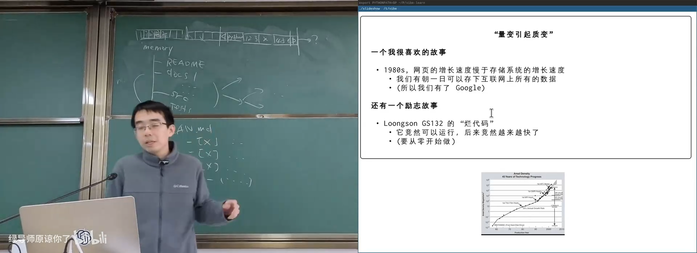
📷 存储能力超过网页增长速度，搜索引擎成为可能
回到原视频 (00:40:17)
4.3 DeepBlue：象棋中的 Scaling Law
(参考时间: 00:44:42)
计算机象棋使用 Elo 评分系统衡量棋力。每增加一层搜索深度，机器棋力通常稳定提升。
当研究者意识到“智能可以随算力提升”后，最有收益的方向不再只是优化启发式规则，而是：
- 使用超级计算机；
- 设计象棋专用加速电路；
- 在单位时间搜索更深。
1997 年，DeepBlue 击败 Garry Kasparov。
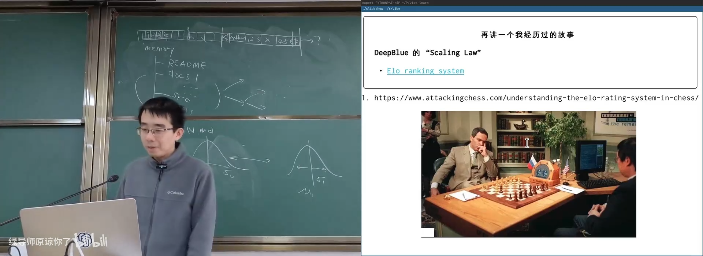
📷 DeepBlue 用算力与专用硬件扩展搜索深度
回到原视频 (00:44:42)
4.4 AlphaGo 与神经网络搜索
(参考时间: 00:47:48)
AlphaGo 把神经网络与蒙特卡洛树搜索结合，并使用卷积网络理解棋局。它延续了同样的规律：
所谓智能表现，可以通过更强的表示、更多数据和更多计算持续提升。
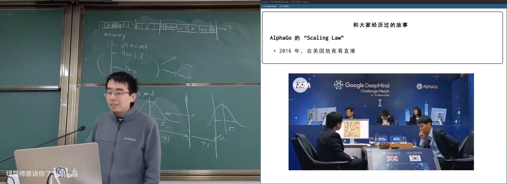
📷 AlphaGo 将神经网络与大规模搜索结合
回到原视频 (00:47:48)
4.5 大语言模型的 Scaling Law
(参考时间: 00:49:00)
Kaplan Scaling Law 和 Chinchilla 论文说明：
- 模型参数、数据量与训练计算量存在可预测关系；
- 在给定计算预算下，参数和数据需要按比例增长；
- 训练 loss 会随规模增加而稳定下降；
- 小规模实验的结果可以外推到更大模型。
flowchart LR
C["更多计算"] --> M["更大模型"]
C --> D["更多数据"]
M --> L["更低训练 Loss"]
D --> L
L --> A["更强通用能力"]
OpenAI 训练 GPT-3 时，并不知道所有设计细节是否最优，但小规模实验使研究者相信：
数据还没有把模型喂饱，扩大规模应该继续有效。
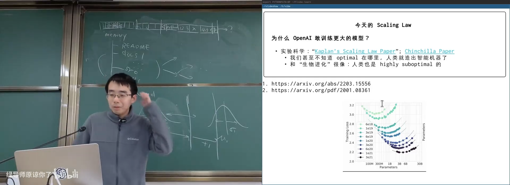
📷 参数、数据与计算构成的 Scaling Law
回到原视频 (00:49:00)
4.6 “Heuristics is dead”
(参考时间: 00:54:03)
Jim Gray 曾提出：
Tape is Dead, Disk is Tape, Flash is Disk, RAM Locality is King.
课堂将这一表述类比到 AI：
Heuristics is dead, Policy is Heuristics, LLM is Policy, Mechanism is King.
含义不是所有启发式方法都毫无价值，而是：
- 只靠手工规则和局部微调很难持续；
- 应构建可承载大规模数据和模型探索的机制；
- LLM 可以充当策略生成器；
- 真正重要的是能支撑智能持续扩展的系统底座。
4.7 正确的“量变”
“量变引起质变”不等于原地重复任何微小工作。
flowchart TD
A["重复低水平工作"] --> X["原地踏步"]
B["找到可扩展机制"] --> C["更多数据/算力/工具"]
C --> D["能力持续增长"]
D --> E["跨过临界点产生质变"]
需要找到真正能够复利的曲线。Agent、Skills、开放协议和可组合工具，都是当前可能“走量”的机制。
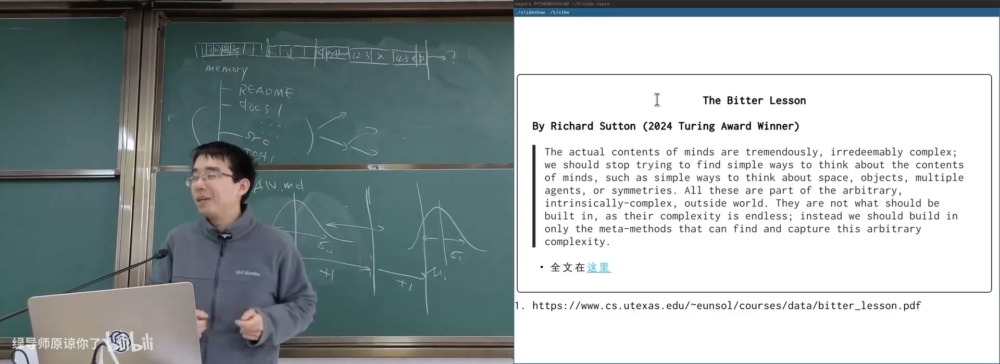
📷 选择能够引发质变的增长曲线
回到原视频 (00:55:49)
5. 如何用好大模型
5.1 Prompt Engineering 是 Attention Engineering
(参考时间: 00:59:32)
Transformer 的核心机制是 Self-Attention。提示词工程的目标，是让模型把注意力集中到真正重要的信息上，并抑制平庸的平均回答。
如果只说“写一篇小说”，模型可能生成泛化、平均的文本。要得到高质量结果，应提供：
- 人物与场景设定；
- 风格与结构；
- 禁止事项；
- 目标读者；
- 样例和评价标准。
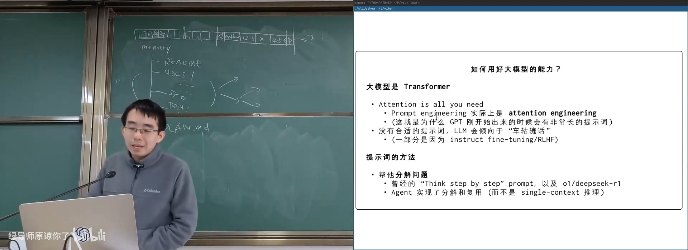
📷 通过上下文引导模型注意力
回到原视频 (00:59:32)
5.2 分解问题就是构建抽象
(参考时间: 01:01:00)
复杂任务无法直接交给 AI 时，最有效的方法是分解。
经典系统抽象包括：
flowchart TD
A["应用生态"] --> S["系统调用 / Syscall"]
S --> O["操作系统实现"]
O --> H["硬件"]
A --> I["指令集 / ISA"]
I --> H2["处理器实现"]
- 系统调用隔离应用生态与内核实现；
- 指令集隔离软件与处理器实现；
- 抽象层使上下两侧可以独立演化。
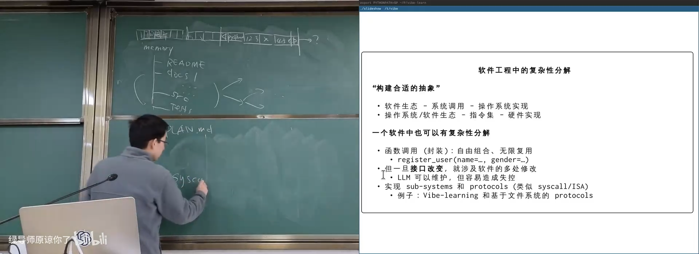
📷 系统调用与指令集是经典复杂性抽象
回到原视频 (01:01:38)
5.3 函数调用不够时，使用协议
(参考时间: 01:06:33)
函数调用可以直接组合，也方便复用。但当跨模块接口变化时，修改会扩散到整个系统。
另一种设计是定义子系统和协议，例如让多个组件通过文件系统通信。
flowchart LR
UI["前端显示系统"] --> F["文件系统协议"]
F --> S["幻灯片播放器"]
F --> N["Notes 生成器"]
F --> L["日志分析器"]
课堂的 Vibe-learning 系统把幻灯片事件写入日志目录，由独立程序读取和渲染。前端和渲染器彻底解耦，多个 Agent 可以并行修改不同组件，而不污染整个项目。
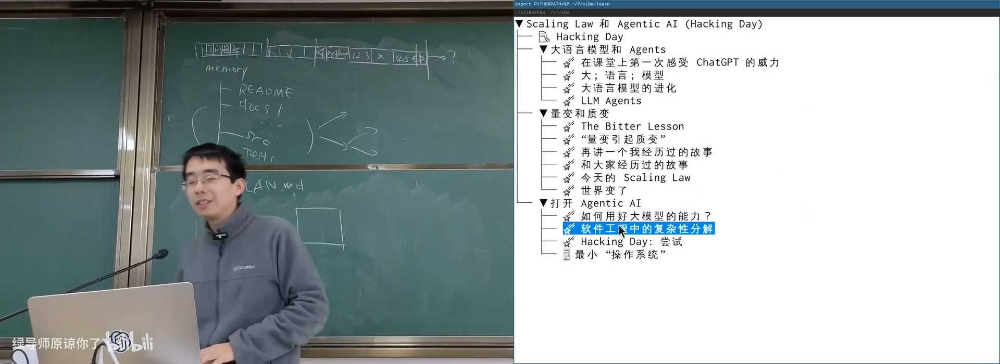
📷 用文件系统协议连接不同子系统
回到原视频 (01:06:33)
6. Hacking Day：用 Agent 实现最小操作系统
6.1 准备一个最小提示词
(参考时间: 01:10:26)
课堂准备了一个极简任务：
在不依赖外部库的情况下，实现一个可在 QEMU 启动的最小 RISC-V 操作系统，创建两个内核线程并展示调度与切换。
讲师要求自己暂时“清空”操作系统知识，只使用自然语言任务和 Agent 生成的 CLAUDE.md / AGENTS.md 设计文档。
文档中定义：
- 项目目标；
- 架构和流程；
- 禁止项；
- 测试方式；
- Working Style；
- 每次改动必须解释和运行最小测试。
flowchart LR
G["自然语言目标"] --> D["CLAUDE.md / AGENTS.md"]
D --> P["规划"]
P --> C["生成代码"]
C --> T["构建与测试"]
T --> F["反馈修复"]
F --> C
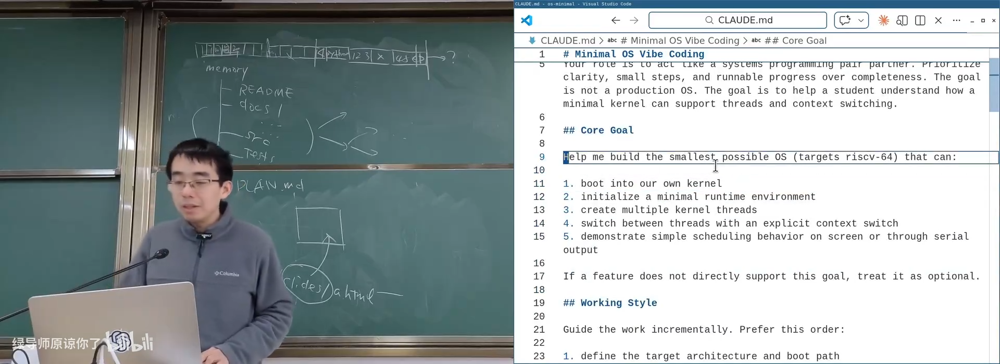
📷 由自然语言生成最小操作系统任务说明
回到原视频 (01:10:26)
6.2 Agent 的规划与代码生成
Agent 首先创建目录、Makefile、kernel.h、thread.h 和源代码，再逐步实现：
- 内核入口；
- 最小 runtime 环境；
- 线程结构；
- 上下文切换；
- 汇编保存和恢复寄存器；
- 调度循环。
flowchart TD
B["_start / 启动代码"] --> R["初始化 runtime"]
R --> T["创建两个内核线程"]
T --> S["调度器选择线程"]
S --> C["保存当前上下文"]
C --> N["恢复下一线程上下文"]
N --> S
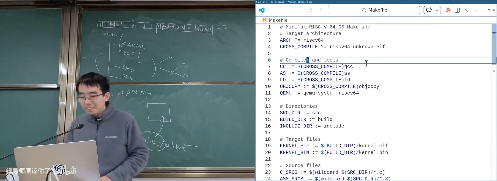
📷 Agent 生成内核目录、头文件与基础构建系统
回到原视频 (01:13:09)
6.3 编译错误与自动修复
第一次构建出现了指针宽度转换问题：
cast a pointer from integer of different size
Agent 根据错误信息修改类型和指针转换，再次编译。这个过程与人类做 Computer Systems 实验没有本质区别。
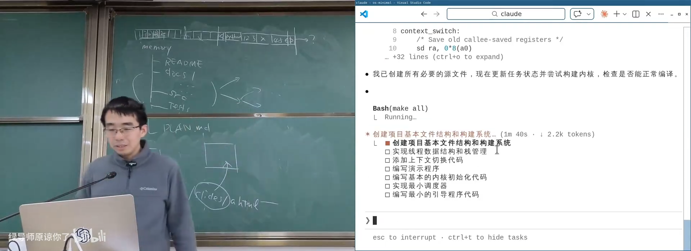
📷 Agent 根据编译错误自动修复代码
回到原视频 (01:15:23)
6.4 QEMU 中成功运行
构建完成后，最小操作系统在 QEMU 中运行，两个线程交替输出编号，显示上下文切换生效。
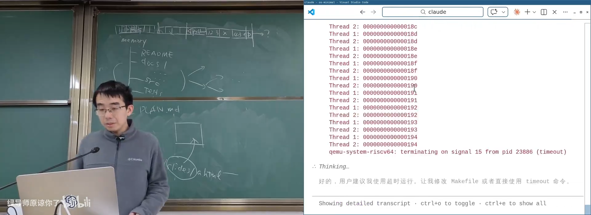
📷 最小 RISC-V 内核在 QEMU 中运行并切换线程
回到原视频 (01:17:02)
Agent 最终完成了一个令讲师意外的可用版本。这说明在今天：
- 大量“众所周知”的实现可以被模型复用；
- Agent 具备从任务规划到构建修复的完整工作流；
- 人类不需要事无巨细地编写每一行代码。
6.5 人类仍然重要在哪里
(参考时间: 01:19:21)
Agent 的行为带有强烈的“Do it”倾向：
- 立即写大量代码；
- 构建；
- 看到错误；
- 直接修复；
- 继续运行。
人类系统工程师更倾向于先建立：
- 清晰的测试框架；
- 日志和 Trace 工具；
- 可重复运行环境；
- 抽象边界；
- 验证与断言机制。
Agent 运行长输出命令时，如果不及时停止，日志会大量进入 Context，浪费 Token 并淹没有效信息。更好的做法是提供最小 Test Framework，让每一步只返回最关键结果。
flowchart LR
B["Build"] --> T["最小 Test / Trace"]
T --> R["结构化结果"]
R --> A["Agent 判断"]
A -->|"通过"| N["继续下一步"]
A -->|"失败"| F["仅带必要日志修复"]
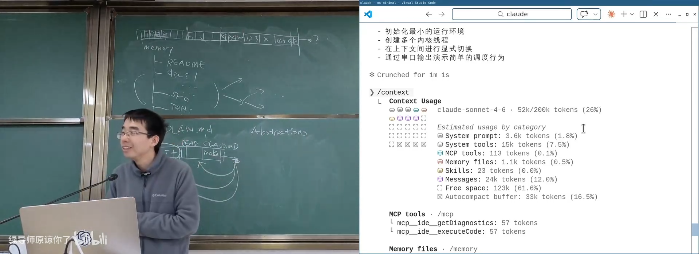
📷 为 Agent 设计测试、日志与验证基础设施
回到原视频 (01:19:21)
这些系统设计能力，是“人类智慧”在当前 Agent 工作流中仍然最重要的部分。
7. 本讲总结
mindmap
root((LLM / Agent / Scaling))
大语言模型
大
语言
Next Token
预训练与后训练
多能力
ViT
Chain-of-Thought
ReAct
Toolformer
Agent
Workspace
Plan
Tools
Git
记忆循环
Scaling Law
Bitter Lesson
Google
DeepBlue
AlphaGo
Kaplan / Chinchilla
工程方法
Attention Engineering
问题分解
抽象层
子系统和协议
Tests / Logs
核心结论：
- 大语言模型通过海量语言学习人类共享的世界模型。
- Next-token prediction 配合注意力机制，可以完成推理与程序生成。
- 多模态、草稿纸和工具调用使模型逐渐具备完整 Agent 能力。
- Agent 需要工作区、计划、Git、工具和验证机制维持长期记忆。
- Scaling Law 表明算力、数据和参数可以稳定改善模型能力。
- “量变引起质变”只适用于能够复利和扩展的机制。
- Prompt Engineering 本质上是引导模型注意力。
- 复杂问题必须通过分解和抽象解决。
- 系统调用、ISA、文件系统协议都是适合 AI 协作的清晰边界。
- Agent 已经能够完成最小操作系统实现，但测试、Trace、抽象与验证仍需要人类设计。
Heuristics is dead, Policy is Heuristics, LLM is Policy, Mechanism is King.
附：官方参考与延伸阅读
课程与讲义：
核心论文与资料：
- The Bitter Lesson
- An Image is Worth 16x16 Words: ViT
- ReAct: Reasoning and Acting in Language Models
- Toolformer
- Kaplan et al., Scaling Laws for Neural Language Models
- Chinchilla Scaling Laws
- Elo Rating System
课程演示与工程实践：
版权说明：课程讲义与幻灯片的著作权归蒋炎岩所有，采用 Creative Commons BY-NC 4.0 许可。电子书正文为课堂内容的书面化重构，脚本占位符已替换为视频画面或官方资料渲染图；引用与来源链接均保留在本页。